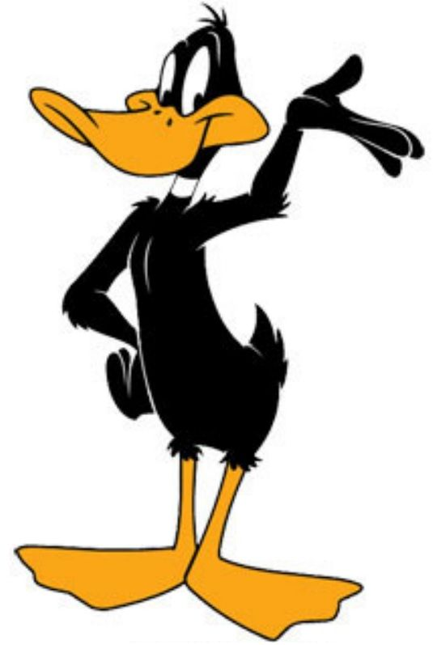

About Me
Daffy Duck is an animated cartoon character produced by Warner Bros. Styled as an anthropomorphic black duck, the character has appeared in cartoon series such as Looney Tunes and Merrie Melodies, in which he usually has been depicted as a foil for Bugs Bunny. Daffy was one of the first of the new "screwball" characters that emerged in the late 1930s to replace traditional everyman characters who were more popular earlier in the decade,[citation needed] such as Mickey Mouse and Popeye.
Daffy starred in 130 shorts in the golden age, making him the third-most frequent character in the Looney Tunes/Merrie Melodies cartoons, behind Bugs Bunny's 167 appearances and Porky Pig's 162 appearances. Virtually every Warner Bros. cartoon director put his own spin on the Daffy Duck character – he may be a lunatic vigilante in one short but a greedy gloryhound in another. Bob Clampett and Chuck Jones both made extensive use of these two very different versions of the character.
Daffy was number 14 on TV Guide's list of top 50 greatest cartoon characters.